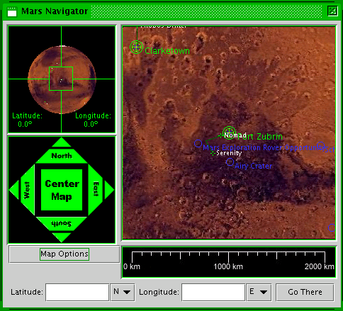

Mars Simulation Project
|
|  |
| Mars Navigator |
The Mars Navigator displays the virtual Mars through generated maps and a globe.
The Mars globe shows a cross hair box that marks the area covered by the generated map. Green dots on the globe represent settlements and white dots represent rovers not parked at settlements. The latitude and longitude of the center point of the globe is also displayed. The globe does not respond to mouse clicks or drags at this point.
The navigation arrows can be mouse clicked to rotate the globe. The far arrow points are for rough control with 30 degree rotations while the near arrows are for fine control with 5 degree rotations. The globe will not rotate North or South past 90 degrees. Clicking on the "Center Map" button in the middle will generate a map for the center point the globe is at.
The map is the primary means of viewing the virtual Mars. It displays a surface or topographical (depending on mode) map of Mars rendered at a given center point. The map is at a scale of 7.4km/pixel. Settlements and rovers are displayed on the map and it is updated approximately every second to reflect positional changes in rovers. Mouse clicking on the map will recenter it and the globe at the position clicked. Clicking on a settlement or rover icon will open up a info window for that unit instead of recentering the map. The map doesn't currently support mouse-drag operations.
Directly below the map is a legend displaying distances for the surface map and topographical scale for the topographical map.
To the left of the legend is the "Options" button. Clicking this will show a drop down set of checkboxes with the following options:
Latitude and longitude can be typed in as integers or decimals. The "Go There" button will recenter the map and globe at the specified latitude and longitude if they are valid.
Please send questions or comments to mars-sim-users@lists.sourceforge.net
Mars Simulation Project copyright © Scott Davis, 2008
Map data courtesy of NASA Jet Propulsion Laboratory